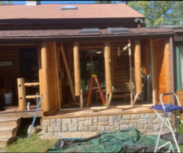
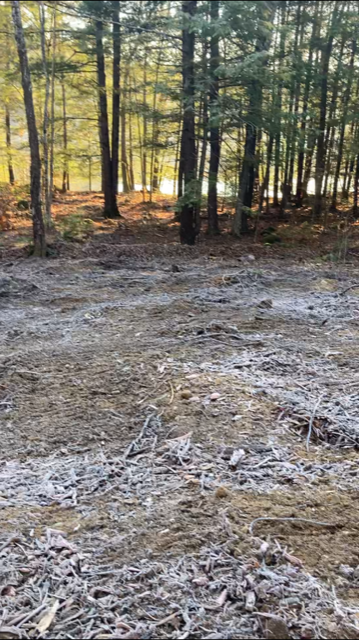

Gavin Doherty Info
 |
 |
 |
 |
|---|


My name is Gavin Doherty, I am currently in my first year of a Coomputer Science Degree at the University of Rhode Island.
I am joining the University as a Transfer Student from Bridgewater State University where I studied Exercise Science back in 2013
but i did not finish my degree, as life decided a different path for me.
I grew up in a small rural town in Southeast Massachusetts to two of the best parents a kid could ask for
on an 40 acre piece of farmland where we raises cattle, pigs, chickens, horses, and sheep. Better known to any kid as "Paradise".
Life growing up was alot of fun but even more work between the animals, land, and our yearly demand of 20+ cords of firewood.
I began my profitable working life as a pre-teen bondafied logger, inspecting logs before sending them to the sawmill.
I worked this and other smaller odd jobs through high school where I graduated in 2011 holding my 2 month old daughter (life comes at you fast).
From there, with a passion for exercises and fitness I attended Springfield Colleges' Kinesiology program but before long,
found myself working to much as a plumber to keep up with my studies, so a transfer closer to home and a career change where next on my list.
I worked as a plumber for the next few years while moonlighting as a personal trainer in the early mornings and attending night classes at BSU.
As to be expected this didnt last long and before I knew it I was working fulltime as a trainer at a gym in Foxboro Ma. where we tended to Division 1 Collegiate
and Professional Athletes. I was living the dream, or so I thought.
Adventure came calling next and I found myself on a plane to Fort Sill Oklahoma ready to join the United States Army HOOAH.
I spent 3 years with the Army Reserves during which time I started my own business doing custom carpentry on Log Homes and restoring old homes.
Now I have transfering to the Rhode Island National Guard and still run my business while taking my Computer Science courses.
Life is good. and now I partition my time between my work/hobby of constructing Log Homes, spending time with my family,
and building my dream house on the property on Lake Sebago in Maine.